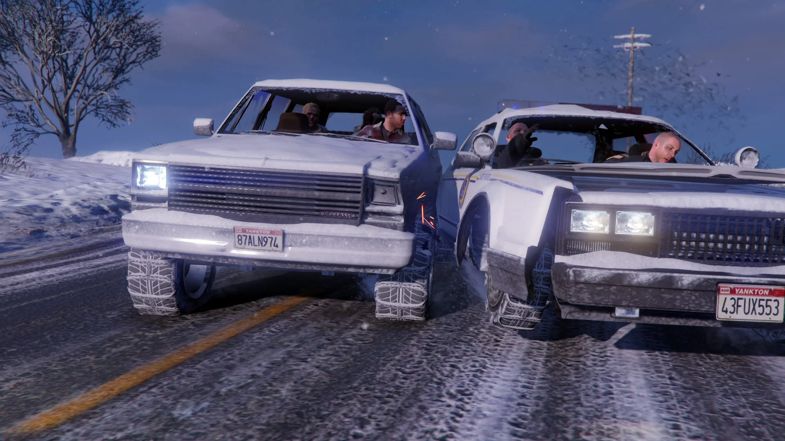
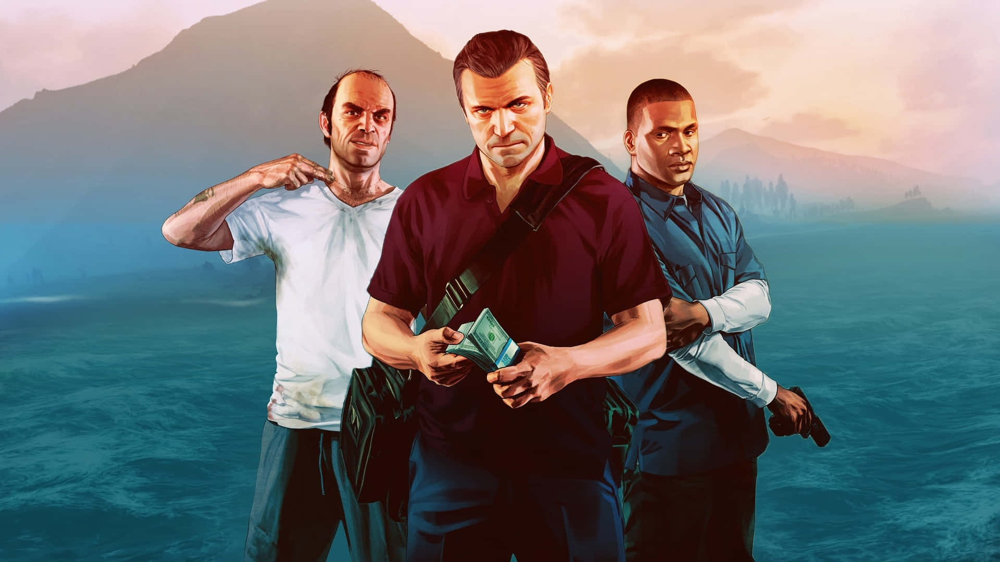
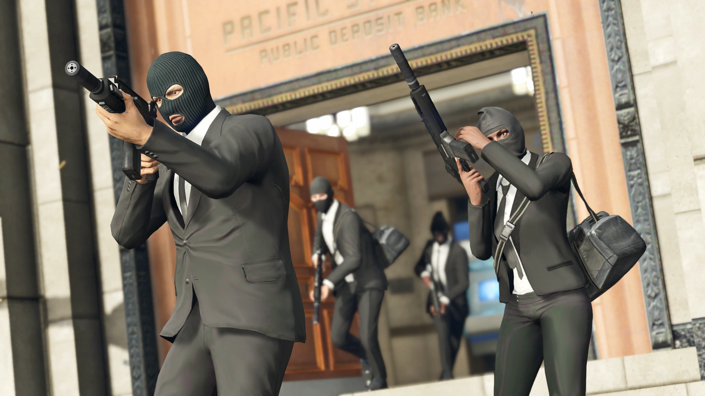
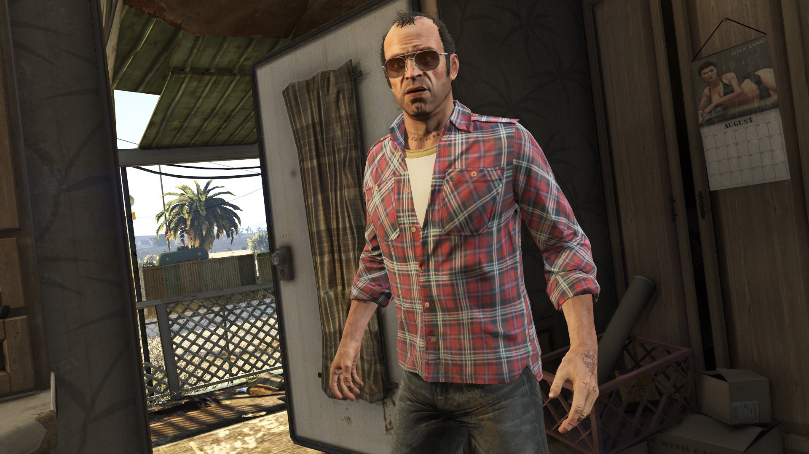
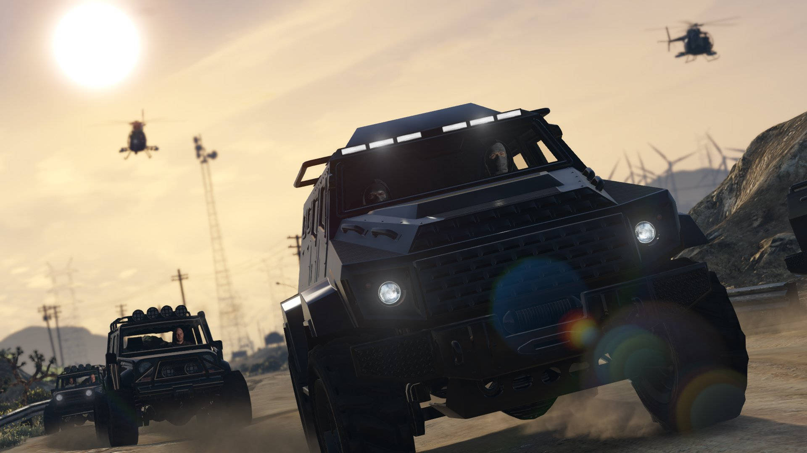
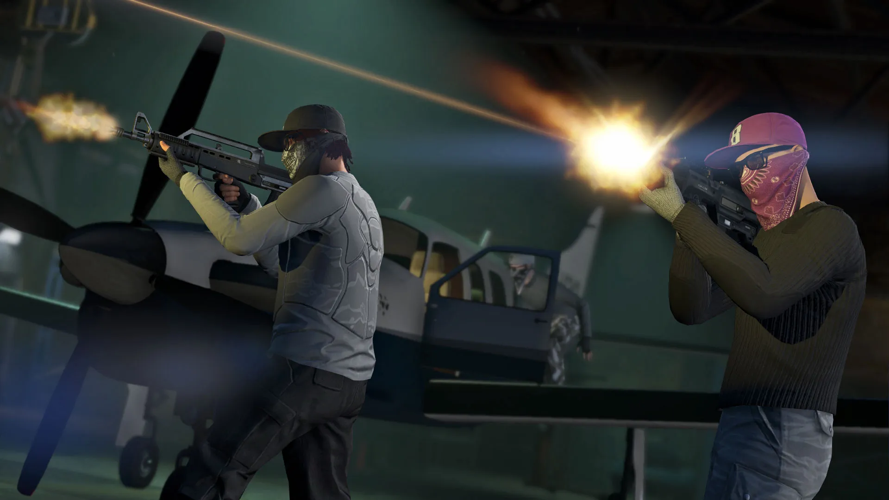
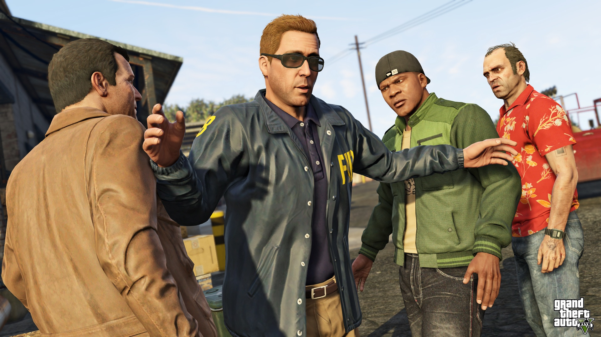

Prologo: En 2004, Michael Townley, Trevor Philips y Brad Snider asaltan el banco de Bobcat Security en Ludendorff, North Yankton. Después de bloquear a los rehenes incluyendo a un guardia de securidad de Bobcat sin nombre, Trevor coloca un explosivo a la puerta de la bóveda y Michael lo detona mediante su teléfono. Michael y Trevor entran a la bóveda y roban poco menos de $180.000. Cuando el equipo escapa, Michael es apuntado en la cabeza por Jaspers, otro guardia de seguridad de Bobcat, quien le remueve la máscara de su cabeza, pero recibe un tiro en la cabeza por Trevor. Luego, los tres asaltantes proceden a escapar por la salida, pero la policía llega a montones y disparan contra los ladrones, aunque estos se abren paso hasta la carretera, donde el conductor de huida los espera.

Primer acto: Presentando a los protagonistas: Franklin Clinton trabaja para un concesionario de coches y conoce a Michael durante un intento de recuperación de un vehículo.
Franklin recupera coches y se empieza a hartar de su vida de delincuente de bajo nivel.
Michael y Franklin rescatan al hijo de Michael, Jimmy, cuando unos ladrones intentan robar su yate.
Franklin usa a un perro llamado Chop para rastrear a un objetivo.

Inicio de los atracos: Michael destroza la casa de un instructor de tenis que coqueteaba con su esposa, pero resulta ser de un mafioso llamado Martín Madrazo.
Michael es forzado a volver a delinquir y planea un atraco a una joyería para pagarle a Madrazo.
Michael recluta a Franklin y un equipo para robar una joyería. Trevor descubre en las noticias que Michael está vivo.

Trevor regresa: Trevor, viviendo en el desierto de Blaine County, elimina a la competencia para fortalecer su negocio de drogas y armas.
Trevor se enfrenta a bandas rivales y luego decide buscar a Michael en Los Santos.

Reencuentro y expansión: Trevor y Michael se reencuentran durante un concurso de talentos donde Jimmy, el hijo de Michael, está humillando a la familia.
Michael trabaja con el FIB para limpiar sus problemas legales. Reclutan a Trevor y Franklin para hacer misiones secretas.
Franklin, Lamar y Trevor intentan hacer un negocio de drogas que sale mal.

Grandes golpes: El FIB fuerza al trío a asaltar un convoy para robar unos documentos.
Michael y Trevor realizan una violenta misión de tortura para el FIB.
Trevor planea robar un cargamento de Merryweather, una empresa paramilitar privada.

Complicaciones familiares: Trevor roba un tren y, junto a Michael, descubre más secretos del gobierno.
El trío planea un robo mucho más grande: el golpe al Union Depository.

Traiciones y tensiones: Trevor descubre que Brad, su amigo, no está en prisión como creía, sino que murió en el atraco inicial. Se siente traicionado por Michael.
Franklin ayuda a robar coches de lujo.
Trevor salva a Michael tras un secuestro.
El trío trabaja en otro plan para robar en el Union Depository, pero debe limpiar su rastro en el FIB primero.

El gran atraco: Preparativos para el robo al Union Depository.
Finalmente, roban todo el oro del banco central de Los Santos. Es el mayor golpe del juego.

Final: Tras el golpe, Franklin recibe una orden: el FIB y Devin Weston quieren que elimine a Trevor o a Michael.
Se puede elegir entre:
- Matar a Trevor (Opción A).
- Matar a Michael (Opción B).
- Salvar a ambos y enfrentarse a todos los enemigos (Opción C, "Deathwish").
